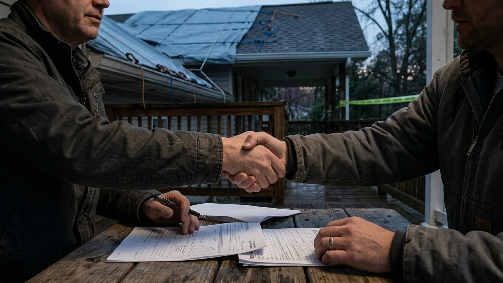
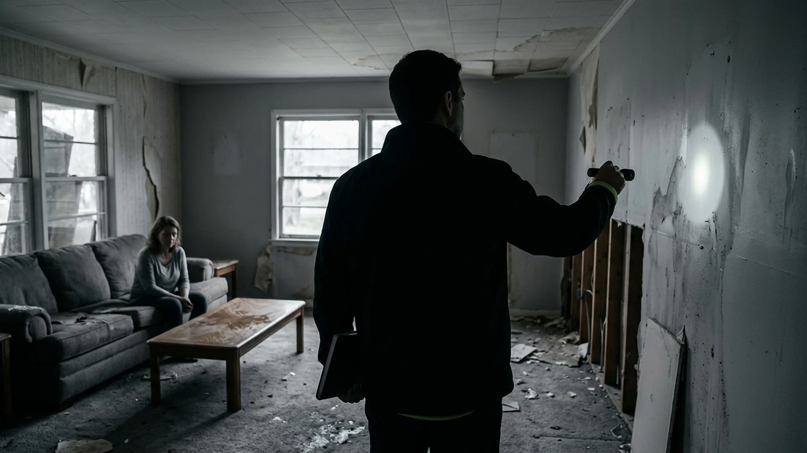

How Can I Find a Public Adjuster Near Me?
/how-can-i-find-a-public-adjuster-near-me/ · short: near-me
/how-can-i-find-a-public-adjuster-near-me/ · short: near-me

/top-5-benefits-for-hiring-a-public-insurance-adjuster-0/ · short: top-5-benefits-0

/top-reasons-to-hire-a-public-adjuster/ · short: top-reasons

/how-do-i-reopen-an-insurance-claim/ · short: how-do-i-reopen
/why-reopen-a-denied-insurance-claim/ · short: why-reopen

/contractors-legally-negotiate-insurance-claims/ · sample-3
/what-happens-when-you-dont-call-a-public-adjuster-0/ · sample-3
/why-you-should-not-accept-an-insurance-companys-first-offer-0/ · sample-3